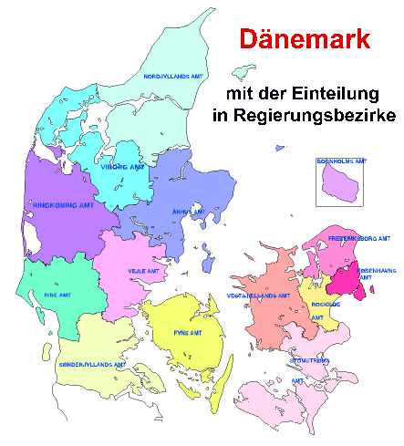
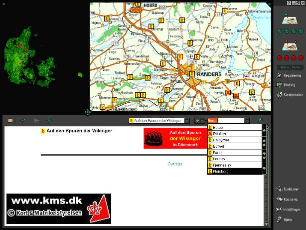
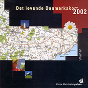

DK Infos - Letztes Update 07.10.2024
Die Bezeichnung Dänemark ist auf die "Danen" zurückzuführen - die "Stämme der wilden Danen", wie sie im Zusammenhang mit dem Besuch des Missionars Willibrord erwähnt werden. Der Name Dänemark taucht zum ersten Mal in den Reiseschilderungen von Ottar und Wulfstan auf, niedergeschrieben in der zweiten Hälfte des 9. Jahrhunderts am englischen Hof. Ottar reiste mit dem Schiff sowohl nach Norden um das Nordkap bis ins Weiße Meer als auch nach Süden zum Handelsplatz Skiringssal am Oslofjord und weiter bis Haithabu. In Ottars Bericht heißt es u.a.: "Und er erzählte, dass er von Skiringssal in fünf Tagen bis zu der Handelsstadt segelte, die Haithabu heißt. Sie liegt zwischen den Wenden, Sachsen und Angeln und gehört den Dänen. Als er von Skiringssal fortsegelte, hatte er drei Tage lang an der Backbordseite Dänemark, an der Steuerbordseite das offene Meer, und dann, zwei Tage, bevor er nach Haithabu kam, hatte er an Steuerbord Jütland und Sillende und viele Inseln. Und in diesen zwei Tagen lagen backbord die Inseln, die zu Dänemark gehören". Anmerkung: Die kimbrische Halbinsel wurden zu der Zeit offenbar im nördlichen Teil mit Jütland und im südlichen Teil mit Sillende (oder Sinlendi) bezeichnet.
In der Inschrift des Runenstein von Gorm dem Alten in Jelling findet sich erstmals der Namen des Landes auf dänischem Boden. Der Stein lässt sich historisch etwa auf das Jahr 935 datieren. Auf dem zweiten Runenstein in Jelling, der durch
König Gorms Sohn Harald Blauzahn errichtet wurde, findet sich die älteste Christusdarstellung des Nordens und in der Inschrift die Passage: "...und machte die Dänen zu Christen", weshalb er auch als "Taufschein Dänemarks" bezeichnet wird.
Der "Dannebrog" (weißes Kreuz auf rotem Grund) ist seit 1219 Nationalflagge.
Dänemark ist auch die älteste Monarchie Europas. Die Reihe der dänischen Könige reicht 1000 Jahre zurück in die Geschichte bis hin zu
. Mit einer einzigen Ausnahme, Königin Margrethe I., die von 1387-96 regierte, waren bisher alle Regenten Männer gewesen. Dänemarks vormalige Königin Margrethe II. (vom 14.01.1972 - 14.01.2024), die älteste Tochter von König Frederik IX. und Königin Ingrid, kam am 16. April 1940 zur Welt und bestieg 1972 nach dem Tod ihres Vaters den dänischen Thron. Mit nur 31 Jahren wurde Margrethe II. zugleich jüngste Monarchin Europas. Sie entschied sich aber nun zu ihrem 52. Thronjubiläum zu Gunsten ihres ältesten Sohnes Frederik X. abzudanken. Gorm der Alte Dänemark umfasst heute eine Gesamtfläche von ca. 43.093 km². Es gliedert sich in die Halbinsel Jütland und 406 Inseln, davon 80 bewohnt, die verstreut in der Nord- und Ostsee liegen. Die größten davon sind Seeland (7.031 km²), Fünen (2.985 km²), Lolland (1.243 km²) und das weit in der Ostsee liegende Bornholm (588 km²). Die Bevölkerungszahl von ca. 5,9 Mio. ergibt eine Bevölkerungsdichte von 130/km². Im Großraum Kopenhagen wohnen rund 25 % der Gesamtbevölkerung.

Dänemark weist eine Küstenlänge von insgesamt ca. 7300 km auf. Die Landgrenze zwischen Dänemark und Deutschland, die einzige Landgrenze Dänemarks, beträgt hingegen nur ca. 69 km. Die Ausdehnung Dänemarks in N-S Richtung beträgt ca. 360 km und die in O-W Richtung ca. 450 km. An keinem Punkt in Dänemark ist man weiter als 55 km von der Küste entfernt. Mehr als 1000 Seen und 4200 km² Wald kennzeichnen zusammen mit ausgedehnten Agrarflächen das Landschaftsbild.Nördlichster Punkt:
Grenen (Jütland, oberhalb Skagen)
Südlichster Punkt:
Östlichster Punkt:
Insel Christiansø (oberhalb Bornholm)
Westlichster Punkt:
Blåvands Huk (Jütland, oberhalb Esbjerg)
Die höchsten Punkte in Dänemark sind der Møllehøj (170,86 Meter) und der Yding Skovhøj (172,35 Meter). Sie liegen in Jütland, in der Nähe von Skanderborg und nur etwa 3 Kilometer auseinander. Dänemarks niedrigste Stelle liegt mit -7,5 Meter auf der Insel Seeland (Lammefjord, Nähe Holbæk). Die durchschnittliche Höhe in Dänemark liegt bei nur 31 Meter über dem Meeresspiegel.
Die Webseite "Fund og Fortidsminder - Det centralhistoriske Centralregister" beinhaltet eine flächendeckende Datenbank über Dänemark mit über 150.00 kulturhistorischen Lokalitäten. Die nur in dänischer Sprache verfügbare Website bietet verschiedene Suchmöglichkeiten, beherbergt zu den einzelnen Objekten informative Textbeiträge und Kartenmaterial sowie Luftfotos in verschiedenen Maßstäben - ein absolutes Muss für DK-Freunde!
2024 - Skråfoto ist eine Webanwendung, die von der Dänische Agentur für Datenversorgung und Infrastruktur weltweit kostenlos bereitgestellt wird - frei von Urheberrechten. Die Aufnahmen werden alle zwei Jahre erneuert und neben einer Senkrechtaufnahme wird ein Schrägbild aus jeder Himmelsrichtung angeboten, das man über eine Adresssuche aufrufen kann. Was besseres für Luftbilder von Örtlichkeiten in Dänemark gibt es aktuell nicht!
2020 - Der u.a. Eintrag ist im Jahre 2020 total veraltet - das macht man heute mit Google-Maps oder ähnlichen Anwendungen kostenfrei - ich lass es mal trotzdem stehen. Es war damals auf jeden Fall eine tolle Geschichte!
Wenn sich jemand wirklich intensiv mit Dänemark beschäftigt und auch seinen Urlaub regelmäßig dort verbringt, ist die CD-ROM "Det levende Danmarkskort 2002" besonders zu empfehlen. Wenn man sich einigermaßen mit Computern auskennt und ein bisschen die dänische Sprache beherrscht wird man damit bestimmt keine Schwierigkeiten haben (zumal Lesen viel leichter verständlich ist als Zuhören).
Die (derzeit noch aktuelle) Ausgabe 2002 beinhaltet u.a. komplette Karten von Dänemark im Maßstab von 1:50 000, 1:100 000, 1:850 000, 1:3.200 000 sowie eine Satellitenkarte. Über Internet-Anbindung kann für die jeweils benötigte Örtlichkeit zusätzlich auf Kartenmaterial im Maßstab von 1:25 000 zugegriffen werden. Die Karten können abgespeichert und/oder ausgedruckt werden.
Die CD-ROM beinhaltet darüber hinaus Kartenmaterial zu Grönland, den Färöer, die ehemals dänische Region Schonen im heutigen Schweden, die Region "Großer Belt" u.a. Auf den Karten sind mit Hilfe von roten Stecknadeln Flächen- und Entfernungsmessungen möglich (auch mit mehreren Zwischenstationen).
Das Programm arbeitet mit verschiedenen Fenstern, die den persönlichen Bedürfnissen angepasst bzw. ausgeblendet werden können. Standard sind drei Fenster, zwei in der oberen Hälfte und eines in der unteren Hälfte. In den beiden oberen Fenstern wird die Satellitenkarte und eine Karte in einem größeren Maßstab angezeigt, während im unteren Fenster die verschiedenen Informations-Rubriken ausgesucht, angewählt und angezeigt werden können.
Es gibt mehrere Rubriken mit denen sich nahezu alles Wissenswerte über Dänemark in Wort und Bild erfahren lässt. In der Rubrik dänische Vorzeitdenkmäler sind die dort aufgelisteten Denkmäler u.a. alphabetisch, nach Fundtypen und nach der Fundperiode erfasst. In der Rubrik Vergnügen und Unterhaltung sind Freizeit- und Vergnügungsparks, Schwimmbäder, Kanuverleiher, Go-Kartbahnen, Golfplätze, Bowlingbahnen, Surfschulen, historische Eisenbahnstrecken usw. aufgeführt. In der Rubrik Übernachtung sind Campingplätze, Jugendherbergen, Hotels und Wirtshäuser (Kro) zu finden. In der Rubrik Put and Take Seen finden sich die Angelteiche mit einigen Tipps aufgelistet. In der Rubrik Sehenswürdigkeiten finden sich die Kirchen, Gärten und Parks, Museen, Schlösser und Herrenhöfe, Tierparks und Aquarien. In der Rubrik Reisen finden sich die Lufthäfen, Bahnhöfe und Fährhäfen. Die Rubrik Wald und Natur widmet sich den Übernachtungsplätzen in der freien Natur, den Aussichtspunkten, den Findlingen und verschiedenen Wandertouren. Die Rubrik Schonen bringt alles zu dem ehemals zu Dänemark gehörenden schwedischen Landesteil näher. In der Rubrik Touristbüros finden sich die selbigen aufgelistet. Die Rubrik Gemeinden in Zahlen ermöglich eine Einsicht in Steuersätze, Brutto-Einkommen, Altersaufbau und Ausbildungsstand der Bevölkerung, Immobilienpreise und Kindertagesstätten in den Landkreisen und den Städten/Gemeinden.
In den jeweiligen Rubriken werden die Örtlichkeiten mit Anschrift und Telefonnummer aufgeführt. Meist sind entsprechende Fotografien eingefügt. Die genaue Lage wird direkt in der Karte angezeigt. Die Örtlichkeit kann auch über die Karte ausgewählt werden. Zu fast jedem Eintrag gibt es einen oder mehrere Links, um über das Internet noch weitere Informationen einzuholen.
Außerdem kann man auch eine eigene - auch mehrere - Rubriken einfügen, mit der man dann z.B. seine jährliche Urlaubsreise in Wort und Bild festhalten kann. Mit Hilfe von grünen Stecknadeln lassen sich die betreffenden Örtlichkeiten in der Karte markieren und dann mit einem Icon für das gewünschte Thema versehen (z.B. Haus, Kanutour, Museum, Strandtour, Aussichtspunkt usw. - man kann auch eigene Icons einbinden). Dann vergibt man einen Namen für die Örtlichkeit, dazu kann man schriftliche Aufzeichnungen einfügen und ein Bild einbinden. Wenn hernach die eigene Rubrik angewählt wird, wurde eine alphabetische Übersicht der eingebundenen Örtlichkeiten angelegt und mit der Karte und den Eintragungen verlinkt. Ein Klick auf den ausgewählten Ort führt sofort zu der entsprechenden Eintragung und zeigt das dazugehörige Bild an. Dazu wird in der Karte das gewählte Icon an dem jeweiligen Ort angezeigt.
Die CD-ROM kann in verschiedenen Geschäften, Postämtern usw. in Dänemark gekauft oder auch über das Internet unter www.kms.dk bestellt werden. Der Preis für die (derzeit noch aktuelle) Ausgabe 2002 liegt bei DKK 445 ( ca. 60 EUR). Meines Erachtens eine Anschaffung die sich wirklich lohnt! Im Sommer 2003 wurde sie in dänischen Buchhandlungen für ca. 300 DKK angeboten (ca. 40 EUR).
Über Neuerungen kann man auf Wunsch per eMail unterrichtet werden. Außerdem kann man via Internet verschiedene Updates zu Veränderungen/Aktualisierungen und auch für zuvor markierte Örtlichkeiten den Maßstab 1:25.000 kostenlos herunterladen.

Ansicht des Programms "Det levende Danmarkskort 2001" mit der selbsteingerichteten Rubrik "Auf den Spuren der Wikinger" - Die Karte oben rechts im Maßstab von 1:850 000 ist mit meinen entsprechenden Eintragungen versehen. Über die gelben Icons wird sofort im unteren Feld der eingetragene Text und das dazugehörige Bild eingeblendet.

Ansicht der Ausgabe 2002